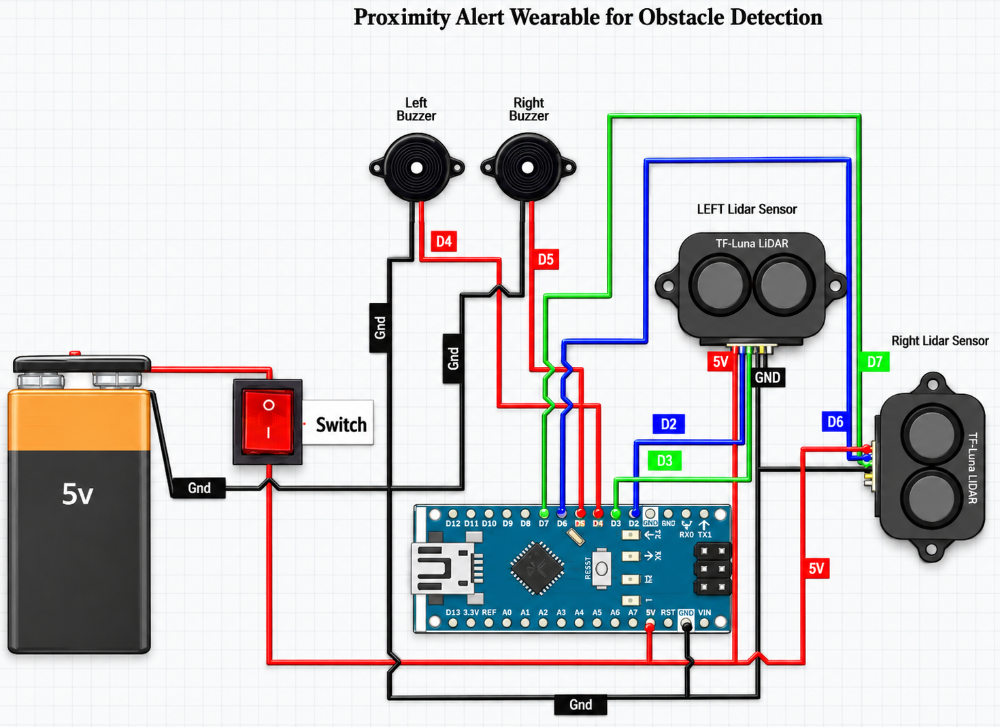

Power
5V Battery
The device's single power source — a 5V battery that supplies every other component with the energy it needs to run.
- Output
- 5V
for Obstacle Detection
See what's inside“a wearable LiDAR-based navigation device for obstacle detection and mobility assistance for persons with visual impairment.”
— Statement of the Problem

Hover, tap, or tab through the diagram to learn what each part does.
This device is built from nine parts working together across four systems: power, computing, sensing, and alerting. Here's what each one does.
The device's single power source — a 5V battery that supplies every other component with the energy it needs to run.
A simple on/off switch sitting between the battery and the Arduino. Flip it to power the whole device on or off.
Every component's negative connection — the battery, the Arduino, both sensors, and both buzzers — is tied to one shared ground, giving the whole circuit a common reference point.
A shared power line carrying 5V from the switched battery to the Arduino and both LiDAR sensors, so one power path feeds the entire sensing system.
The device's decision-maker. This small microcontroller runs all of the logic — reading both distance sensors and deciding when and how the buzzers should sound.
An infrared distance sensor aimed at the wearer's left side. It measures how far away the nearest object is, using a narrow beam so it reads the direction it's pointed in rather than a wide area.
The mirror image of the left sensor, aimed at the wearer's right side, with identical specifications.
An active buzzer that sounds the moment it's powered — no tone signal required. It's the wearer's audible warning for obstacles on the left.
The right-side counterpart to the left buzzer, warning the wearer about obstacles on their right.
Hover or tab through the steps to see what each one does.
The Arduino Nano checks its two LiDAR sensors one at a time, switching back and forth between left and right rather than reading both at once. Each sensor continuously streams its distance readings, and before the Arduino trusts any single reading, it checks that reading against the sensor's own built-in checksum — if a reading doesn't check out, it's thrown away and the Arduino simply waits for the next one.
Once a reading passes that check, the Arduino sorts it into one of four distance zones, each with its own beep pattern. The closer the obstacle, the more urgent the sound.
A single beep, then a long pause, repeating. Only the side that spotted the object sounds.
A burst of five beeps at a steady pace, then a pause, repeating. Side-specific.
Continuous beeping that smoothly speeds up as the object gets closer. Side-specific.
Very fast continuous beeping — both buzzers sound together, no matter which sensor detected the object.
Beyond about 8m, or with no valid reading, the device stays silent.
The two buzzers are wired and driven independently rather than sharing a single tone signal. That's what lets the left and right buzzer genuinely sound at the same moment — which matters most in the Close zone, where both sides alert together.